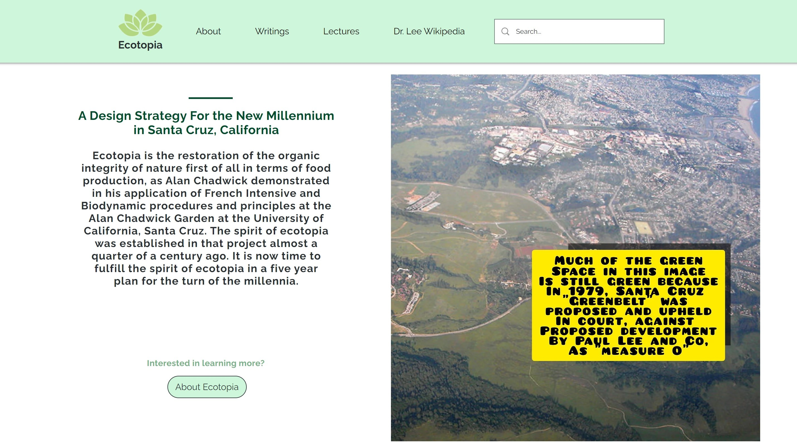

Projects
Below describes some of my projects and some key features of them!
ez-3d
- Developed CRUD microservices for 4 data types using Golang
- Created end-to-end tests using Node.js and unit tests using Golang for each of the 4 microservices
- Assisted in executing a migration of existing backend to a GCP serverless architecture
- Implemented a sleep algorithm in C++ to improve device energy efficiency by 20% and
discovered intervals for the node to record and send data through the
Particle API
{kind=link}
Sprouty device to record data in the field.
{kind=link}
Architecture of the project.
{kind=link}
Logic for the sleep algorithm.
GetVirtual
Website Developer/Project Manager Internship
June 2020 - Febuary 2021
- Developed websites, blogs, and e-commerce to assist 6 local businesses in Santa Cruz during the pandemic
- Led teams of up to 5 members developing WIX, SquareSpace, and Wordpress websites while also generating
tutorial videos for both clients and peers
- Evaluated Google Analytics to assess traffic to the website and communicated with owners to adjust the
website layout, improving sales conversion rates by up
to 15%
- Enhanced SEO through reduced page load times of up to 25%, acquired backlinks, and added relevant keywords
by utilizing the Google Search Console
{kind=link}
A website I created as a solo project for ecotopia.org.
{kind=link}
A website I helped create by managing a team of 5 for wavehavenglass.com.

A website I helped create and improve SEO for in a team of 5 for shopfybr.com.
Grand Amazon Lodge and Tours
Co-founder
December 2018 - Present
- Aid 2 local communities in Peru with food, work, and medical treatment
- Design and maintain the Grand Amazon website on Wordpress; accelerated
page load times by reducing image and video sizes by 50%
- Facilitate outreach programs to help nearby communities, such as the development
of rain catchers for clean drinking water or building a safe dock for boats
{kind=link}
{kind=link}
{kind=link}